library(janitor)
library(lubridate)
#library(opendatatororonto)
library(tidyverse)
library(tinytable)2 소방 호스에서 마시기
채프먼 앤 홀/CRC는 이 책을 2023년 7월에 출판했습니다. 여기에서 구매하실 수 있습니다. 이 온라인 버전은 인쇄된 내용에 일부 업데이트가 있습니다.
선행 조건
- 탁월함의 평범함: 계층화와 올림픽 수영 선수에 대한 민족지학적 보고서 읽기, (Chambliss 1989)
- 이 논문은 탁월함이 특별한 재능이나 선물이 아니라 기술, 훈련, 태도 때문임을 밝힙니다.
- 원자 습관으로서의 데이터 과학 읽기, (Barrett 2021)
- 이 블로그 게시물은 작고 일관된 행동을 포함하는 데이터 과학 학습 접근 방식을 설명합니다.
- AI 편향이 실제로 발생하는 방식과 수정하기 어려운 이유 읽기, (Hao 2019)
- 이 기사는 모델이 편향을 영속화할 수 있는 몇 가지 방법을 강조합니다.
핵심 개념 및 기술
- 통계 프로그래밍 언어 R은 데이터를 사용하여 흥미로운 이야기를 전달할 수 있도록 합니다. 다른 언어와 마찬가지로 숙달의 길은 느릴 수 있습니다.
- 프로젝트에 접근하는 데 사용하는 워크플로우는 계획, 시뮬레이션, 획득, 탐색, 공유입니다.
- R을 배우는 방법은 작은 프로젝트로 시작하여 목표 달성에 필요한 것을 작은 단계로 나누고, 다른 사람의 코드를 보고, 각 단계를 달성하기 위해 그것을 활용하는 것입니다. 해당 프로젝트를 완료하고 다음 프로젝트로 넘어갑니다. 각 프로젝트마다 조금씩 더 나아질 것입니다.
소프트웨어 및 패키지
- 기본 R (R Core Team 2024)
- 핵심
tidyverse(Wickham 기타 2019)dplyr(Wickham 기타 2022)ggplot2(Wickham 2016)tidyr(Wickham, Vaughan, 와/과 Girlich 2023)stringr(Wickham 2022)readr(Wickham, Hester, 와/과 Bryan 2022)
janitor(Firke 2023)lubridate(Grolemund 와/과 Wickham 2011)opendatatoronto(Gelfand 2022)tinytable(Arel-Bundock 2024)
2.1 안녕하세요, 세상!
시작하는 방법은 시작하는 것입니다. 이 장에서는 이 책에서 옹호하는 데이터 과학 워크플로우의 세 가지 완전한 예제를 살펴봅니다. 이는 다음을 의미합니다:
\[ \mbox{계획} \rightarrow \mbox{시뮬레이션} \rightarrow \mbox{획득} \rightarrow \mbox{탐색} \rightarrow \mbox{공유} \] R에 익숙하지 않다면 일부 코드가 다소 생소할 수 있습니다. 통계에 익숙하지 않다면 일부 개념이 생소할 수 있습니다. 걱정하지 마십시오. 곧 모든 것이 익숙해질 것입니다.
이야기를 전달하는 방법을 배우는 유일한 방법은 직접 이야기를 전달하기 시작하는 것입니다. 이는 이러한 예제를 작동시키려고 노력해야 함을 의미합니다. 직접 스케치를 하고, 모든 것을 직접 입력하고(R에 익숙하지 않고 로컬에 설치되어 있지 않다면 Posit Cloud를 사용하십시오), 모든 것을 실행하십시오. 처음에는 어려울 것이라는 점을 깨닫는 것이 중요합니다. 이것은 정상입니다.
새로운 도구를 배울 때마다 오랫동안 형편없을 것입니다… 하지만 좋은 소식은 그것이 일반적이라는 것입니다. 그것은 모든 사람에게 일어나는 일이며, 일시적일 뿐입니다.
Hadley Wickham, Barrett (2021) 인용.
여기서 철저하게 안내받을 것입니다. 데이터를 사용하여 이야기를 전달하는 흥분을 경험함으로써, 여러분은 계속해서 노력할 수 있는 힘을 얻기를 바랍니다.
워크플로우의 첫 번째 단계는 계획하는 것입니다. 우리는 상황에 대해 더 많이 알게 되면서 나중에 업데이트해야 할지라도 최종 지점을 설정해야 하기 때문에 이를 수행합니다. 그런 다음 시뮬레이션합니다. 이는 계획의 세부 사항에 집중하게 하기 때문입니다. 일부 프로젝트에서는 데이터 획득이 데이터셋을 다운로드하는 것처럼 간단할 수 있지만, 다른 프로젝트에서는 예를 들어 설문조사를 수행하는 경우 데이터 획득이 주요 초점이 될 수 있습니다. 다양한 양적 방법을 사용하여 데이터를 탐색하여 이해합니다. 마지막으로, 청중의 요구에 초점을 맞춰 우리의 이해를 공유합니다.
시작하려면 Posit Cloud로 이동하여 계정을 만드십시오. 무료 버전으로도 충분합니다. 처음에는 데스크톱 대신 이를 사용합니다. 이는 모든 사람이 동일하게 시작할 수 있도록 하기 위함이지만, 비용을 지불하지 않으려면 나중에 로컬 설치로 변경해야 합니다. 계정을 만들고 로그인하면 그림 fig-02-rstudio_cloud-1과 비슷하게 보일 것입니다.
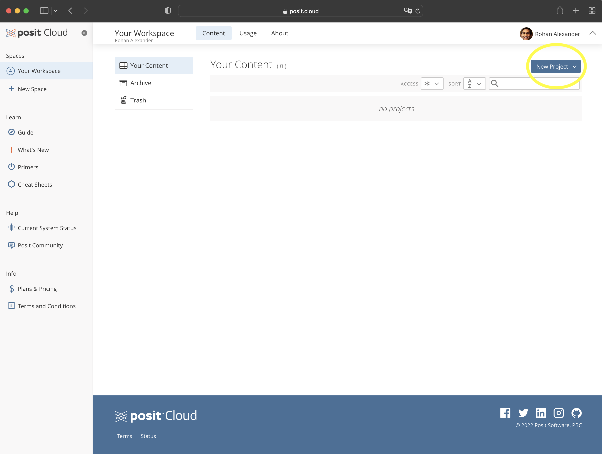
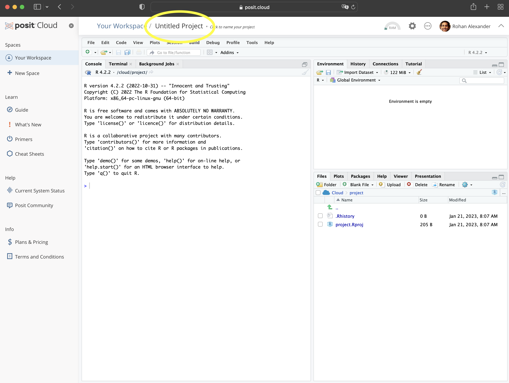
“내 프로젝트”에 있을 것입니다. 여기에서 새 프로젝트를 시작해야 합니다: “새 프로젝트” \(\rightarrow\) “새 RStudio 프로젝트” (그림 fig-02-rstudio_cloud-2). “제목 없는 프로젝트”를 클릭하고 이름을 바꿔 프로젝트 이름을 지정할 수 있습니다.
이제 세 가지 예제를 살펴볼 것입니다: 호주 선거, 토론토 쉼터 사용량, 신생아 사망률. 이 예제들은 점점 더 복잡해지지만, 첫 번째 예제부터 데이터를 사용하여 이야기를 전달할 것입니다. 여기서 많은 측면을 간략하게 설명하지만, 거의 모든 것이 책의 나머지 부분에서 훨씬 더 자세히 설명됩니다.
2.2 호주 선거
호주는 하원 151석을 가진 의회 민주주의 국가이며, 하원에서 정부가 구성됩니다. 두 개의 주요 정당(“자유당”과 “노동당”), 두 개의 소수 정당(“국민당”과 “녹색당”), 그리고 많은 소규모 정당과 무소속이 있습니다. 이 예제에서는 2022년 연방 선거에서 각 정당이 얻은 의석 수를 그래프로 만들 것입니다.
2.2.1 계획
이 예제에서는 두 가지 측면을 계획해야 합니다. 첫 번째는 필요한 데이터셋이 어떻게 생겼는지, 두 번째는 최종 그래프가 어떻게 생겼는지입니다.
데이터셋의 기본 요구 사항은 의석 이름(호주에서는 때때로 “선거구”라고 불림)과 당선된 사람의 정당을 포함해야 한다는 것입니다. 필요한 데이터셋의 빠른 스케치는 그림 fig-australiaexample-data입니다.
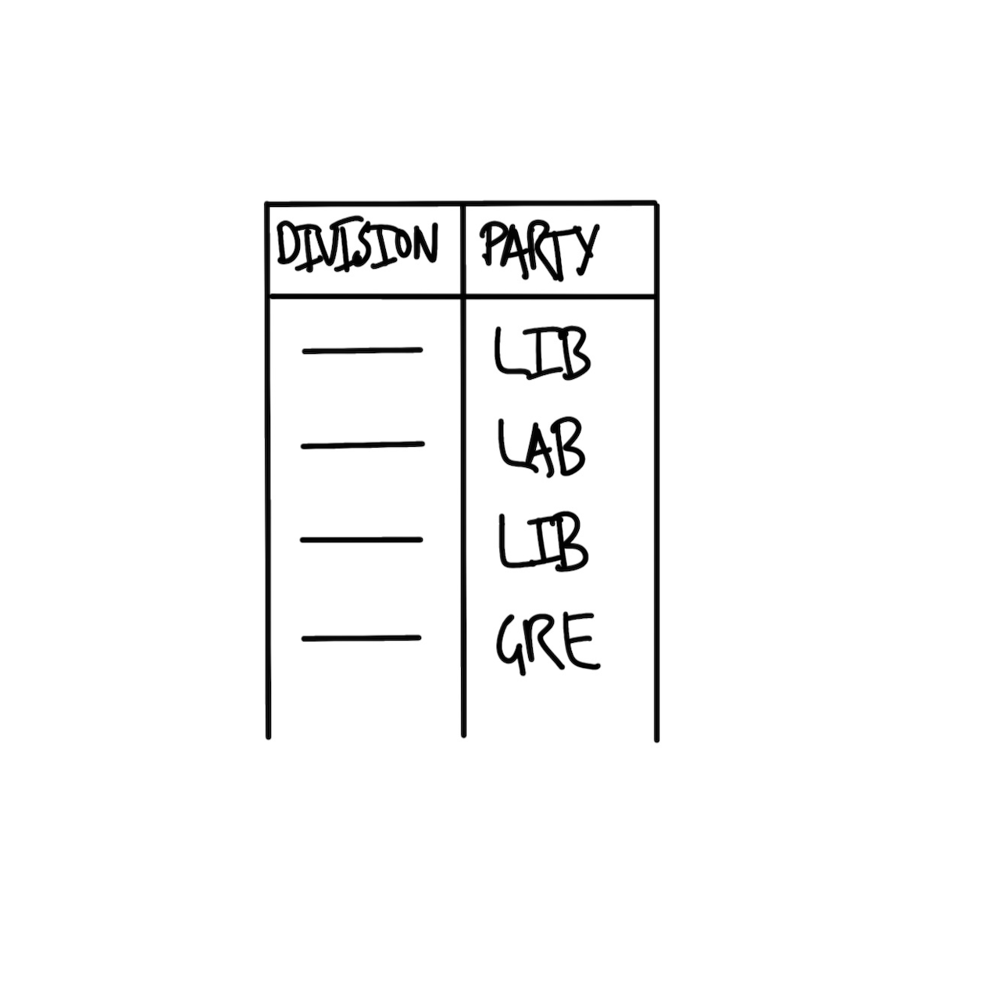
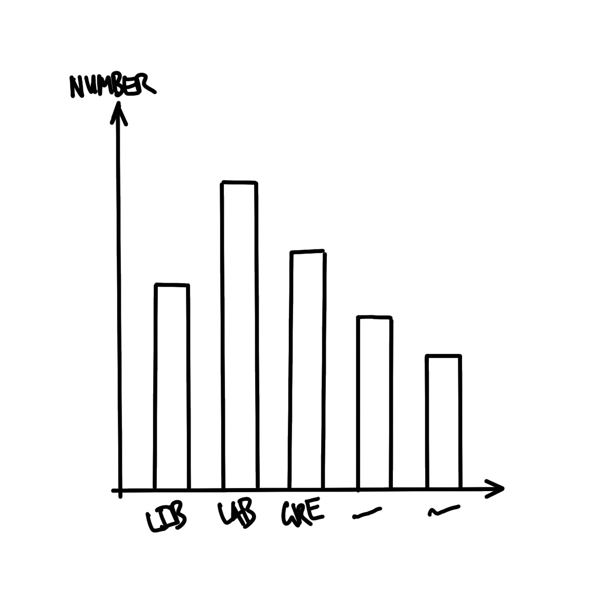
우리는 또한 관심 있는 그래프를 계획해야 합니다. 각 정당이 얻은 의석 수를 표시하고 싶으므로, 우리가 목표로 할 수 있는 빠른 스케치는 그림 fig-australiaexample-graph입니다.
2.2.2 시뮬레이션
이제 스케치에 구체성을 부여하기 위해 일부 데이터를 시뮬레이션합니다.
시작하려면 Posit Cloud 내에서 새 Quarto 문서를 만드십시오: “파일” \(\rightarrow\) “새 파일” \(\rightarrow\) “Quarto 문서\(\dots\)”. “2022년 호주 선거 탐색”과 같은 제목을 지정하고, 저자로 자신의 이름을 추가하고, “시각적 마크다운 편집기 사용”을 클릭 해제하십시오 (그림 fig-quarto-australian-elections-clcik). 다른 옵션은 기본값으로 두고 “생성”을 클릭하십시오.
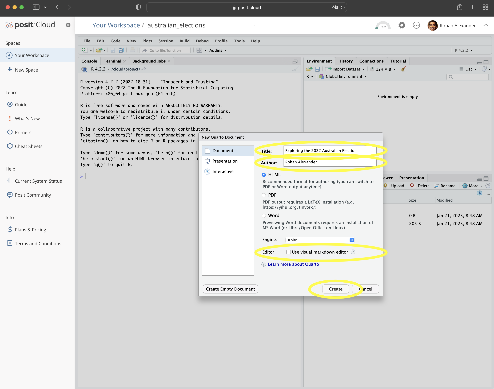
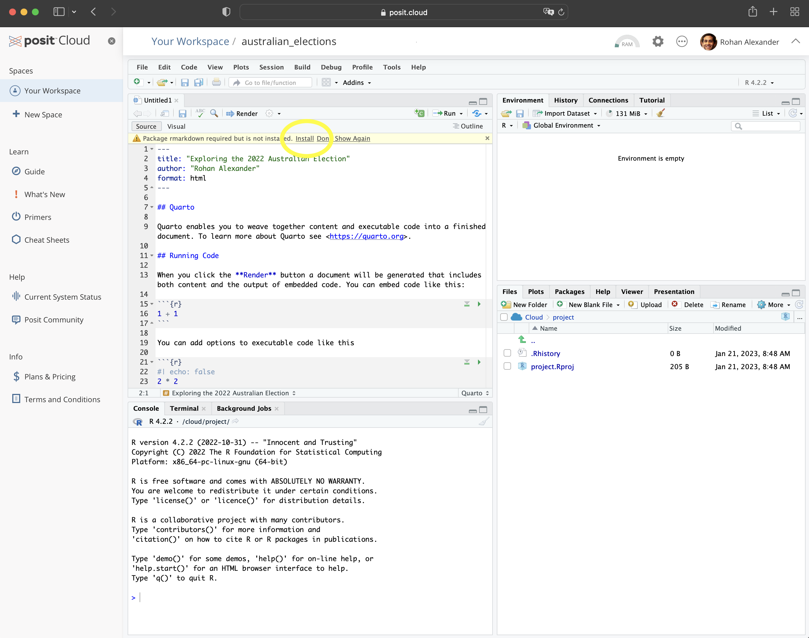
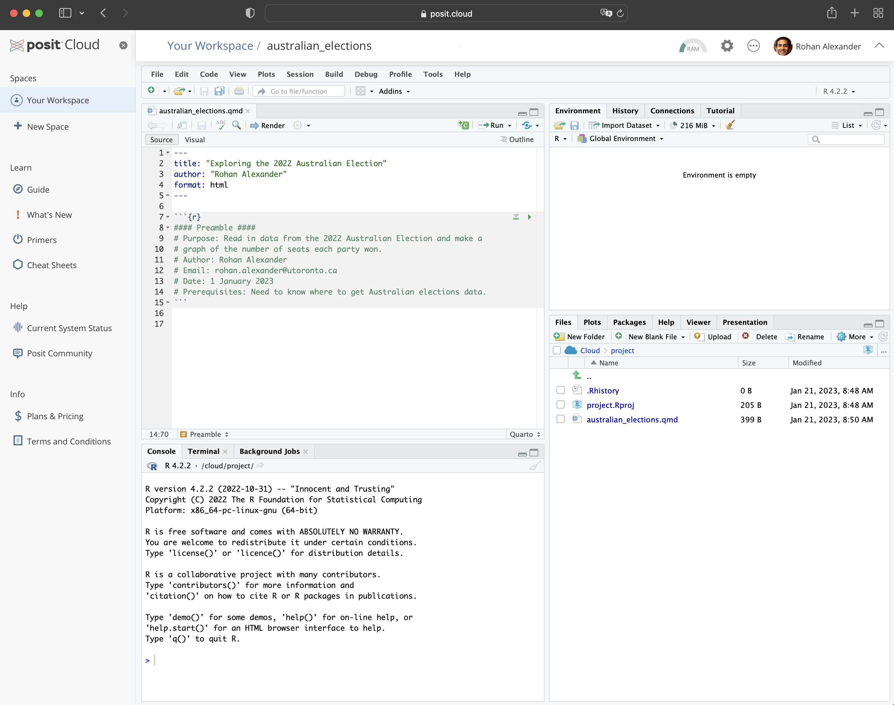
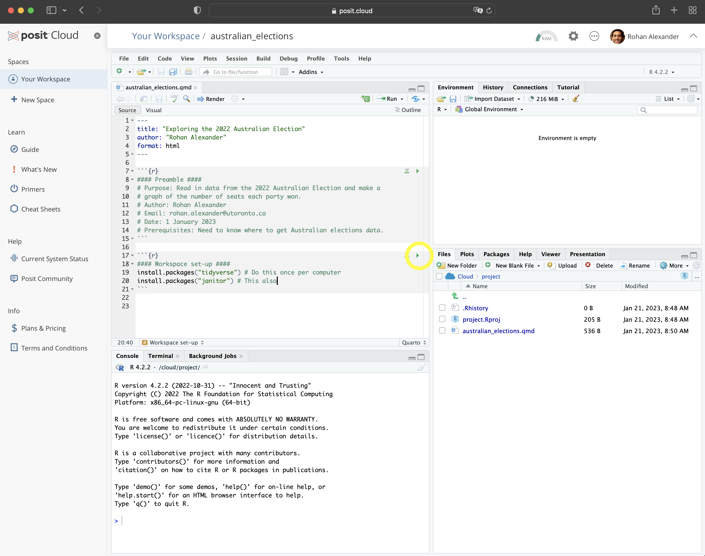
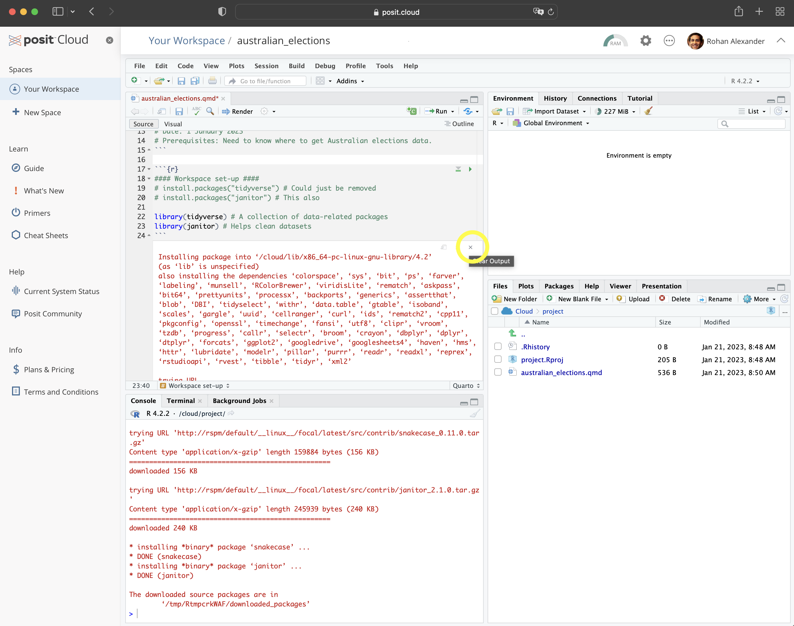
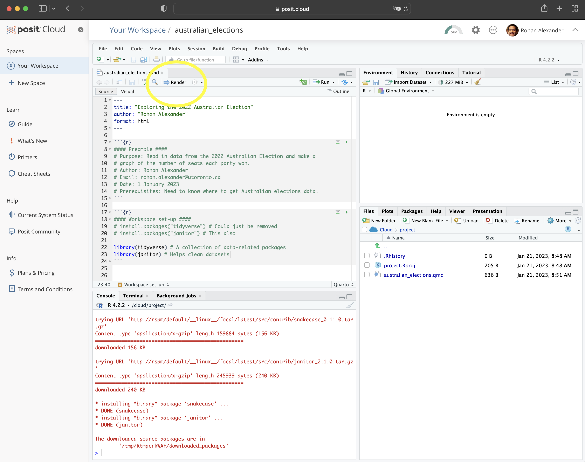
“패키지 rmarkdown 필요…”와 같은 알림이 표시될 수 있습니다 (그림 fig-quarto-australian-elections-wtfquarto). 그런 경우 “설치”를 클릭하십시오. 이 예제에서는 모든 것을 이 하나의 Quarto 문서에 넣을 것입니다. “australian_elections.qmd”로 저장해야 합니다: “파일” \(\rightarrow\) “다른 이름으로 저장…”.
기본 내용을 거의 모두 제거한 다음, 제목 자료 아래에 새 R 코드 청크를 만드십시오: “코드” \(\rightarrow\) “청크 삽입”. 그런 다음 다음을 설명하는 서문 문서를 추가하십시오:
- 문서의 목적;
- 저자 및 연락처 정보;
- 파일이 작성되었거나 마지막으로 업데이트된 시점; 그리고
- 파일이 의존하는 선행 조건.
#### 서문 ####
# 목적: 2022년 호주 선거 데이터를 읽어들이고
# 각 정당이 얻은 의석 수 그래프를 만듭니다.
# 저자: Rohan Alexander
# 이메일: rohan.alexander@utoronto.ca
# 날짜: 2023년 1월 1일
# 선행 조건: 호주 선거 데이터를 얻을 수 있는 곳을 알고 있어야 합니다.R에서 “#”으로 시작하는 줄은 주석입니다. 이는 R에 의해 코드로 실행되지 않고, 대신 사람이 읽도록 설계되었음을 의미합니다. 이 서문의 각 줄은 “#”으로 시작해야 합니다. 또한 “####”로 둘러싸서 이것이 서문 섹션임을 명확히 하십시오. 결과는 그림 fig-quarto-australian-elections-3과 같아야 합니다.
이 후에는 작업 공간을 설정해야 합니다. 여기에는 필요한 패키지를 설치하고 로드하는 것이 포함됩니다. 패키지는 각 컴퓨터에 한 번만 설치하면 되지만, 사용할 때마다 로드해야 합니다. 이 경우 tidyverse와 janitor 패키지를 사용할 것입니다. 이전에 설치되지 않았다면 설치해야 하며, 그런 다음 각각 로드해야 합니다.
거인의 어깨
Hadley Wickham은 RStudio의 수석 과학자입니다. 2008년 아이오와 주립 대학교에서 통계학 박사 학위를 취득한 후 라이스 대학교 조교수로 임용되었고, 2013년 RStudio(현재 Posit)의 수석 과학자가 되었습니다. 그는 tidyverse 패키지 컬렉션을 개발했으며, R for Data Science (Wickham, Çetinkaya-Rundel, 와/과 Grolemund [2016년] 2023) 및 Advanced R (Wickham 2019)를 포함한 많은 책을 출판했습니다. 그는 2019년 COPSS 회장상을 수상했습니다.
패키지 설치 예시는 다음과 같습니다. R 코드 청크와 관련된 작은 녹색 화살표를 클릭하여 이 코드를 실행하십시오 (그림 fig-quarto-australian-elections-4).
#### 작업 공간 설정 ####
install.packages("tidyverse")
install.packages("janitor")이제 패키지가 설치되었으므로 로드해야 합니다. 패키지 설치 단계는 컴퓨터당 한 번만 수행하면 되므로, 해당 코드는 실수로 실행되지 않도록 주석 처리하거나 제거해야 합니다. 또한 패키지를 설치할 때 인쇄된 메시지를 제거할 수 있습니다 (그림 fig-quarto-australian-elections-5).
#### 작업 공간 설정 ####
# install.packages("tidyverse")
# install.packages("janitor")
library(tidyverse)
library(janitor)“렌더링”을 클릭하여 전체 문서를 렌더링할 수 있습니다 (그림 fig-quarto-australian-elections-6). 이렇게 하면 일부 패키지를 설치하라는 메시지가 표시될 수 있습니다. 그런 경우 동의해야 합니다. 그러면 HTML 문서가 생성됩니다.
방금 설치된 패키지에 대한 소개를 위해 각 패키지에는 패키지 및 해당 함수에 대한 정보를 제공하는 도움말 파일이 포함되어 있습니다. 패키지 이름 앞에 물음표를 붙인 다음 콘솔에서 해당 코드를 실행하여 액세스할 수 있습니다. 예를 들어 ?tidyverse.
데이터를 시뮬레이션하려면, “Division”과 “Party”라는 두 변수와 각각에 대한 일부 값을 가진 데이터셋을 만들어야 합니다. “Division”의 경우 합리적인 값은 151개 호주 선거구 중 하나의 이름일 것입니다. “Party”의 경우 합리적인 값은 “Liberal”, “Labor”, “National”, “Green”, “Other” 중 하나일 것입니다. 다시, 이 코드는 R 코드 청크와 관련된 작은 녹색 화살표를 클릭하여 실행할 수 있습니다.
#### 시뮬레이션 ####
set.seed(853)
simulated_data <-
tibble(
# 각 선거구를 나타내기 위해 1부터 151까지 사용
"Division" = 1:151,
# 151번 무작위로 옵션을 선택합니다 (복원 추출)
"Party" = sample(
x = c("Liberal", "Labor", "National", "Green", "Other"),
size = 151,
replace = TRUE
)
)
simulated_data# A tibble: 151 × 2
Division Party
<int> <chr>
1 1 Liberal
2 2 Labor
3 3 Other
4 4 Liberal
5 5 Other
6 6 Other
7 7 Labor
8 8 Green
9 9 National
10 10 National
# ℹ 141 more rows어느 시점에서 코드가 실행되지 않고 도움을 요청하고 싶을 것입니다. 코드의 작은 스니펫을 스크린샷하여 누군가가 그것을 기반으로 도움을 줄 수 있을 것이라고 기대하지 마십시오. 그들은 거의 확실히 그럴 수 없습니다. 대신, 그들이 실행할 수 있는 방식으로 전체 스크립트를 제공해야 합니다. GitHub가 무엇인지는 sec-reproducible-workflows에서 더 자세히 설명할 것이지만, 지금 당장 도움이 필요하다면 스크린샷을 찍는 것보다 더 유용한 방식으로 코드를 공유할 수 있도록 GitHub Gist를 순진하게 생성해야 합니다. 첫 번째 단계는 GitHub에서 무료 계정을 만드는 것입니다 (그림 fig-githubone). 적절한 사용자 이름을 생각하는 것이 중요합니다. 이는 여러분의 전문 프로필의 일부가 될 것이기 때문입니다. 전문적이고, 어떤 과정과도 독립적이며, 이상적으로는 실제 이름과 관련된 사용자 이름을 사용하는 것이 좋습니다. 그런 다음 오른쪽 상단에서 “+”를 찾고 “새 Gist”를 선택하십시오 (그림 fig-githubgistone).
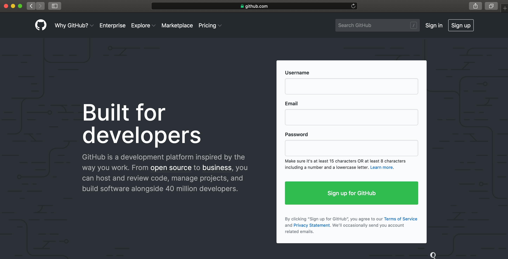


여기에서 오류가 발생하는 마지막 부분뿐만 아니라 모든 코드를 Gist에 추가해야 합니다. 그리고 끝에 “.R”이 포함된 의미 있는 파일 이름을 지정하십시오. 예를 들어 “australian_elections.R”. 그림 fig-githubgisttwo에서는 library(Tidyverse) 대신 library(tidyverse)와 같이 잘못된 대소문자가 사용되었습니다.
“공개 Gist 생성”을 클릭하십시오. 그런 다음 이 Gist의 URL을 도움을 요청하는 사람과 공유하고, 문제가 무엇인지, 무엇을 달성하려고 하는지 설명할 수 있습니다. 모든 코드를 사용할 수 있으므로 그들이 더 쉽게 도움을 줄 수 있을 것입니다.
2.2.3 획득
이제 실제 데이터를 얻고 싶습니다. 필요한 데이터는 호주 연방 선거를 조직하는 비당파 기관인 호주 선거 관리 위원회(AEC)에서 가져옵니다. readr의 read_csv()에 웹사이트 페이지를 전달할 수 있습니다. readr는 tidyverse의 일부이므로 명시적으로 로드할 필요가 없습니다. <- 또는 “할당 연산자”는 read_csv()의 출력을 “raw_elections_data”라는 객체에 할당합니다.
#### 데이터 읽어들이기 ####
raw_elections_data <-
read_csv(
file =
"https://results.aec.gov.au/27966/website/Downloads/HouseMembersElectedDownload-27966.csv",
show_col_types = FALSE,
skip = 1
)
# AEC 웹사이트에서 데이터를 읽어들였습니다. 나중에 문제가 생기거나
# 이동할 경우를 대비하여 저장해 두는 것이 좋습니다.
write_csv(
x = raw_elections_data,
file = "australian_voting.csv"
)head()를 사용하여 데이터셋을 빠르게 살펴볼 수 있습니다. head()는 처음 여섯 행을 보여주고, tail()는 마지막 여섯 행을 보여줍니다.
head(raw_elections_data)# A tibble: 6 × 8
DivisionID DivisionNm StateAb CandidateID GivenNm Surname PartyNm PartyAb
<dbl> <chr> <chr> <dbl> <chr> <chr> <chr> <chr>
1 179 Adelaide SA 36973 Steve GEORGANAS Austral… ALP
2 197 Aston VIC 36704 Alan TUDGE Liberal LP
3 198 Ballarat VIC 36409 Catherine KING Austral… ALP
4 103 Banks NSW 37018 David COLEMAN Liberal LP
5 180 Barker SA 37083 Tony PASIN Liberal LP
6 104 Barton NSW 36820 Linda BURNEY Austral… ALP tail(raw_elections_data)# A tibble: 6 × 8
DivisionID DivisionNm StateAb CandidateID GivenNm Surname PartyNm PartyAb
<dbl> <chr> <chr> <dbl> <chr> <chr> <chr> <chr>
1 152 Wentworth NSW 37451 Allegra SPENDER Indepen… IND
2 153 Werriwa NSW 36810 Anne Maree STANLEY Austral… ALP
3 150 Whitlam NSW 36811 Stephen JONES Austral… ALP
4 178 Wide Bay QLD 37506 Llew O'BRIEN Liberal… LNP
5 234 Wills VIC 36452 Peter KHALIL Austral… ALP
6 316 Wright QLD 37500 Scott BUCHHOLZ Liberal… LNP 데이터를 사용하려면 정리해야 합니다. 계획 단계에서 원했던 데이터셋과 유사하게 만들려고 합니다. 계획에서 벗어나는 것은 괜찮지만, 이는 의도적이고 합리적인 결정이어야 합니다. 저장한 데이터셋을 읽어들인 후 가장 먼저 할 일은 변수 이름을 조정하는 것입니다. janitor의 clean_names()를 사용하여 이를 수행할 것입니다.
#### 기본 정리 ####
raw_elections_data <-
read_csv(
file = "australian_voting.csv",
show_col_types = FALSE
)# 이름을 더 쉽게 입력할 수 있도록 합니다.
cleaned_elections_data <-
clean_names(raw_elections_data)
# 처음 여섯 행을 살펴봅니다.
head(cleaned_elections_data)# A tibble: 6 × 8
division_id division_nm state_ab candidate_id given_nm surname party_nm
<dbl> <chr> <chr> <dbl> <chr> <chr> <chr>
1 179 Adelaide SA 36973 Steve GEORGANAS Australian …
2 197 Aston VIC 36704 Alan TUDGE Liberal
3 198 Ballarat VIC 36409 Catherine KING Australian …
4 103 Banks NSW 37018 David COLEMAN Liberal
5 180 Barker SA 37083 Tony PASIN Liberal
6 104 Barton NSW 36820 Linda BURNEY Australian …
# ℹ 1 more variable: party_ab <chr>이름이 더 빨리 입력되는 이유는 RStudio가 자동으로 완성하기 때문입니다. 이를 위해 변수 이름을 입력하기 시작한 다음 “tab” 키를 사용하여 완성합니다.
데이터셋에는 많은 변수가 있으며, 우리는 주로 “division_nm”과 “party_nm” 두 가지에 관심이 있습니다. tidyverse의 일부로 로드한 dplyr의 select()를 사용하여 관심 있는 특정 변수를 선택할 수 있습니다. “파이프 연산자”, |>,는 한 줄의 출력을 다음 줄의 함수의 첫 번째 입력으로 전달합니다.
cleaned_elections_data <-
cleaned_elections_data |>
select(
division_nm,
party_nm
)
head(cleaned_elections_data)# A tibble: 6 × 2
division_nm party_nm
<chr> <chr>
1 Adelaide Australian Labor Party
2 Aston Liberal
3 Ballarat Australian Labor Party
4 Banks Liberal
5 Barker Liberal
6 Barton Australian Labor Party일부 변수 이름은 여전히 약어이기 때문에 명확하지 않습니다. names()를 사용하여 이 데이터셋의 열 이름을 살펴볼 수 있습니다. 그리고 dplyr의 rename()을 사용하여 이름을 변경할 수 있습니다.
names(cleaned_elections_data)[1] "division_nm" "party_nm" cleaned_elections_data <-
cleaned_elections_data |>
rename(
division = division_nm,
elected_party = party_nm
)
head(cleaned_elections_data)# A tibble: 6 × 2
division elected_party
<chr> <chr>
1 Adelaide Australian Labor Party
2 Aston Liberal
3 Ballarat Australian Labor Party
4 Banks Liberal
5 Barker Liberal
6 Barton Australian Labor Party이제 unique()를 사용하여 “elected_party” 열의 고유 값을 살펴볼 수 있습니다.
cleaned_elections_data$elected_party |>
unique()[1] "Australian Labor Party"
[2] "Liberal"
[3] "Liberal National Party of Queensland"
[4] "The Greens"
[5] "The Nationals"
[6] "Independent"
[7] "Katter's Australian Party (KAP)"
[8] "Centre Alliance" 우리가 원했던 것보다 더 많은 세부 정보가 있으므로, dplyr의 case_match()를 사용하여 정당 이름을 시뮬레이션한 것과 일치하도록 단순화할 수 있습니다.
cleaned_elections_data <-
cleaned_elections_data |>
mutate(
elected_party =
case_match(
elected_party,
"Australian Labor Party" ~ "Labor",
"Liberal National Party of Queensland" ~ "Liberal",
"Liberal" ~ "Liberal",
"The Nationals" ~ "Nationals",
"The Greens" ~ "Greens",
"Independent" ~ "Other",
"Katter's Australian Party (KAP)" ~ "Other",
"Centre Alliance" ~ "Other"
)
)
head(cleaned_elections_data)# A tibble: 6 × 2
division elected_party
<chr> <chr>
1 Adelaide Labor
2 Aston Liberal
3 Ballarat Labor
4 Banks Liberal
5 Barker Liberal
6 Barton Labor 이제 데이터가 계획과 일치합니다 (그림 fig-australiaexample-data). 모든 선거구에 대해 당선된 사람의 정당을 가지고 있습니다.
이제 데이터셋을 깔끔하게 정리했으므로 저장해야 합니다. 다음 단계에서 정리된 데이터셋으로 시작할 수 있도록 말입니다. 원시 데이터를 대체하지 않고 나중에 정리된 데이터셋을 쉽게 식별할 수 있도록 새 파일 이름으로 저장해야 합니다.
write_csv(
x = cleaned_elections_data,
file = "cleaned_elections_data.csv"
)2.2.4 탐색
우리가 만든 데이터셋을 탐색하고 싶을 수 있습니다. 데이터셋을 더 잘 이해하는 한 가지 방법은 그래프를 만드는 것입니다. 특히, 여기서는 그림 fig-australiaexample-graph에서 계획한 그래프를 만들고 싶습니다.
먼저, 방금 만든 데이터셋을 읽어들입니다.
#### 탐색 ####
cleaned_elections_data <-
read_csv(
file = "cleaned_elections_data.csv",
show_col_types = FALSE
)dplyr의 count()를 사용하여 각 정당이 얻은 의석 수를 빠르게 셀 수 있습니다.
cleaned_elections_data |>
count(elected_party)# A tibble: 5 × 2
elected_party n
<chr> <int>
1 Greens 4
2 Labor 77
3 Liberal 48
4 Nationals 10
5 Other 12관심 있는 그래프를 만들기 위해 tidyverse의 일부인 ggplot2를 사용합니다. 이 패키지의 핵심은 “+”를 사용하여 레이어를 추가하여 그래프를 만든다는 것입니다. 이를 “더하기 연산자”라고 부릅니다. 특히 ggplot2의 geom_bar()를 사용하여 막대 차트를 만들 것입니다 (그림 fig-canadanice-1).
cleaned_elections_data |>
ggplot(aes(x = elected_party)) + # aes는 "미학"을 줄인 말입니다.
geom_bar()
cleaned_elections_data |>
ggplot(aes(x = elected_party)) +
geom_bar() +
theme_minimal() + # 테마를 더 깔끔하게 만듭니다.
labs(x = "정당", y = "의석 수") # 레이블을 더 의미 있게 만듭니다.
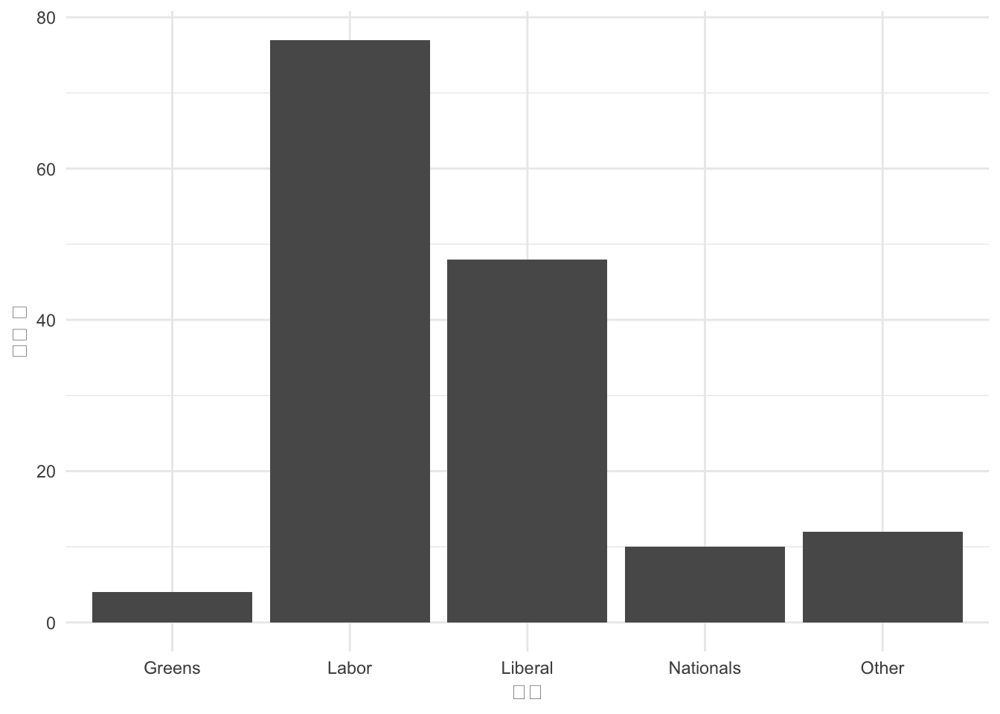
그림 fig-canadanice-1은 우리가 목표로 한 것을 달성합니다. 그러나 기본 옵션을 수정하고 레이블을 개선하여 더 보기 좋게 만들 수 있습니다 (그림 fig-canadanice-2).
2.2.5 공유
이 시점까지 우리는 데이터를 다운로드하고, 정리하고, 그래프를 만들었습니다. 일반적으로 우리가 한 일을 어느 정도 자세히 전달해야 합니다. 이 경우, 우리가 한 일, 왜 했는지, 그리고 무엇을 발견했는지에 대해 몇 단락을 작성하여 워크플로우를 마무리할 수 있습니다. 예시는 다음과 같습니다.
호주는 하원 151석을 가진 의회 민주주의 국가이며, 하원에서 정부가 구성됩니다. 두 개의 주요 정당(“자유당”과 “노동당”), 두 개의 소수 정당(“국민당”과 “녹색당”), 그리고 많은 소규모 정당이 있습니다. 2022년 연방 선거는 5월 21일에 치러졌으며, 약 1,500만 표가 투표되었습니다. 우리는 각 정당이 얻은 의석 수에 관심이 있었습니다.
우리는 호주 선거 관리 위원회 웹사이트에서 의석별 결과를 다운로드했습니다. 통계 프로그래밍 언어 R (R Core Team 2024)과
tidyverse(Wickham 기타 2019) 및janitor(Firke 2023)를 사용하여 데이터셋을 정리하고 정돈했습니다. 그런 다음 각 정당이 얻은 의석 수 그래프를 만들었습니다 (그림 fig-canadanice).노동당이 77석을 얻었고, 자유당이 48석으로 그 뒤를 이었습니다. 소수 정당은 국민당이 10석, 녹색당이 4석을 얻었습니다. 마지막으로 10명의 무소속 의원과 소규모 정당 후보들이 당선되었습니다.
의석 분포는 두 주요 정당에 편향되어 있으며, 이는 호주 유권자들의 비교적 안정적인 선호도를 반영하거나, 전국적인 네트워크나 자금과 같은 주요 정당으로서의 이점 때문에 관성 때문일 수 있습니다. 이러한 분포의 이유에 대한 더 나은 이해는 향후 연구에서 흥미로운 주제입니다. 데이터셋은 투표한 모든 사람으로 구성되지만, 호주에서는 일부가 체계적으로 투표에서 제외되며, 일부는 다른 사람보다 투표하기가 훨씬 더 어렵다는 점에 유의해야 합니다.
이 예제는 몇 단락에 불과하지만, 초록을 형성하도록 축소하거나, 각 단락을 섹션으로 확장하여 전체 보고서를 형성하도록 늘릴 수 있습니다. 첫 번째 단락은 일반적인 개요, 두 번째 단락은 데이터에 초점, 세 번째 단락은 결과에 초점, 네 번째 단락은 토론입니다. (hao2019의?) 예시를 따라, 네 번째 단락은 편향이 스며들 수 있는 영역을 고려하기에 좋은 곳입니다.
2.3 토론토의 노숙자 인구
토론토에는 많은 노숙자 인구가 있습니다 (City of Toronto 2021). 혹독한 겨울은 쉼터에 충분한 공간이 있는 것이 중요함을 의미합니다. 이 예제에서는 2021년 쉼터 사용량 표를 만들어 각 월의 평균 사용량을 비교할 것입니다. 우리의 예상은 12월과 같은 추운 달에 7월과 같은 따뜻한 달보다 사용량이 더 많다는 것입니다.
2.3.1 계획
관심 있는 데이터셋은 날짜, 쉼터, 그리고 그날 밤 점유된 침대 수를 포함해야 합니다. 작동할 데이터셋의 빠른 스케치는 그림 fig-torontohomeless-data입니다. 우리는 매월 평균 일일 점유 침대 수를 포함하는 표를 만드는 데 관심이 있습니다. 표는 그림 fig-torontohomeless-table과 비슷하게 보일 것입니다.
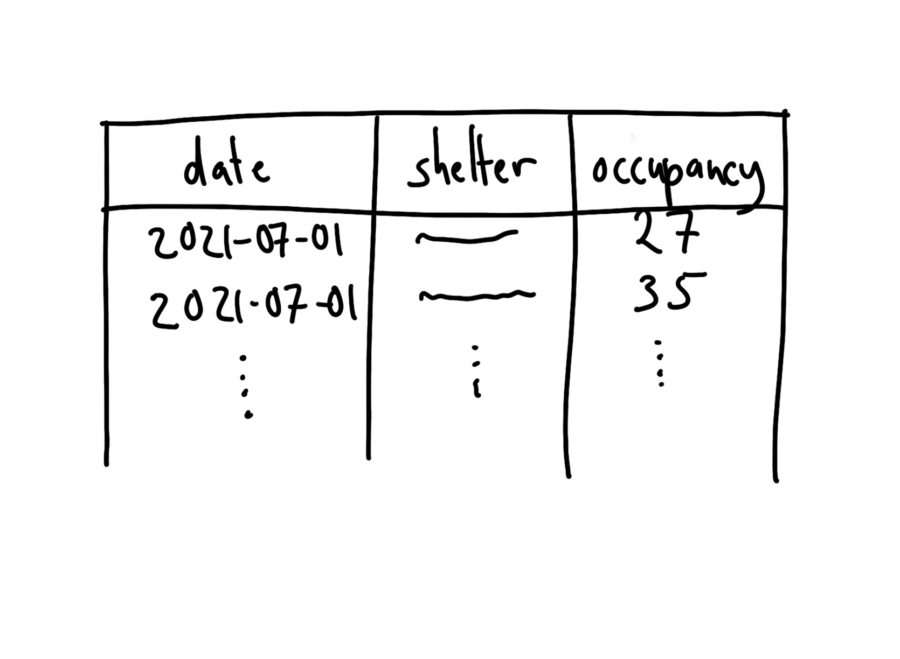

2.3.2 시뮬레이션
다음 단계는 데이터셋과 유사한 데이터를 시뮬레이션하는 것입니다. 시뮬레이션은 데이터 생성 프로세스에 대해 깊이 생각할 기회를 제공합니다. 분석으로 전환할 때, 이는 우리에게 가이드가 될 것입니다. 시뮬레이션을 먼저 사용하지 않고 분석을 수행하는 것은 목표 없이 화살을 쏘는 것과 같다고 생각할 수 있습니다. 즉, 확실히 무언가를 하고 있지만, 잘하고 있는지는 명확하지 않습니다.
Posit Cloud에서 새 Quarto 문서를 만들고 저장한 다음, 새 R 코드 청크를 만들고 서문 문서를 추가하십시오. 그런 다음 필요한 패키지를 설치 및/또는 로드하십시오. 다시 tidyverse와 janitor를 사용할 것입니다. 이들은 이전에 설치되었으므로 다시 설치할 필요가 없습니다. 또한 lubridate도 사용할 것입니다. 이것은 tidyverse의 일부이므로 독립적으로 설치할 필요는 없지만 로드해야 합니다. 또한 opendatatoronto와 knitr도 사용할 것이며, 이들은 설치하고 로드해야 합니다.
#### 서문 ####
# 목적: 2021년 쉼터 사용량 데이터를 얻고 표를 만듭니다.
# 저자: Rohan Alexander
# 이메일: rohan.alexander@utoronto.ca
# 날짜: 2022년 7월 1일
# 선행 조건: -
#### 작업 공간 설정 ####
install.packages("opendatatoronto")
install.packages("knitr")
library(knitr)
library(janitor)
library(lubridate)
library(opendatatoronto)
library(tidyverse)이전 예제에 세부 정보를 추가하자면, 패키지에는 다른 사람들이 작성한 코드가 포함되어 있습니다. 이 책에서 정기적으로 보게 될 몇 가지 일반적인 패키지가 있습니다. 특히 tidyverse. 패키지를 사용하려면 먼저 설치해야 하고, 그런 다음 로드해야 합니다. 패키지는 컴퓨터당 한 번만 설치하면 되지만, 사용할 때마다 로드해야 합니다. 이는 이전에 설치한 패키지를 여기에서 다시 설치할 필요가 없음을 의미합니다.
거인의 어깨
로버트 젠틀맨 박사는 R의 공동 창시자입니다. 1988년 워싱턴 대학교에서 통계학 박사 학위를 취득한 후 오클랜드 대학교로 옮겼습니다. 그 후 23andMe를 포함한 다양한 역할을 수행했으며, 현재 하버드 의과대학 계산 생의학 센터의 전무이사입니다.
거인의 어깨
로스 이아카 박사는 R의 공동 창시자입니다. 그는 1985년 캘리포니아 대학교 버클리에서 통계학 박사 학위를 취득했습니다. 그는 마오리족 지진의 신인 “Ruaumoko”라는 제목의 논문을 작성했습니다. 그 후 오클랜드 대학교로 옮겨 평생 그곳에 머물렀습니다. 그는 2008년 뉴질랜드 왕립 학회 테 아파랑기에서 피커링 메달을 수상했습니다.
사람들이 R과 우리가 사용하는 패키지를 만들기 위해 시간을 기부한다는 점을 고려할 때, 그들을 인용하는 것이 중요합니다. 필요한 정보를 얻기 위해 citation()을 사용합니다. 인수를 사용하지 않고 실행하면 R 자체에 대한 인용 정보를 제공하고, 패키지 이름인 인수를 사용하여 실행하면 해당 패키지에 대한 인용 정보를 제공합니다.
citation() # R에 대한 인용 정보 얻기To cite R in publications use:
R Core Team (2025). _R: A Language and Environment for Statistical
Computing_. R Foundation for Statistical Computing, Vienna, Austria.
<https://www.R-project.org/>.
A BibTeX entry for LaTeX users is
@Manual{,
title = {R: A Language and Environment for Statistical Computing},
author = {{R Core Team}},
organization = {R Foundation for Statistical Computing},
address = {Vienna, Austria},
year = {2025},
url = {https://www.R-project.org/},
}
We have invested a lot of time and effort in creating R, please cite it
when using it for data analysis. See also 'citation("pkgname")' for
citing R packages.citation("ggplot2") # 패키지에 대한 인용 정보 얻기To cite ggplot2 in publications, please use
H. Wickham. ggplot2: Elegant Graphics for Data Analysis.
Springer-Verlag New York, 2016.
A BibTeX entry for LaTeX users is
@Book{,
author = {Hadley Wickham},
title = {ggplot2: Elegant Graphics for Data Analysis},
publisher = {Springer-Verlag New York},
year = {2016},
isbn = {978-3-319-24277-4},
url = {https://ggplot2.tidyverse.org},
}시뮬레이션으로 돌아가서, 우리는 “date”, “shelter”, “occupancy” 세 가지 변수가 필요합니다. 이 예제는 set.seed()를 사용하여 시드를 추가하여 이전 예제를 기반으로 구축됩니다. 시드는 동일한 코드를 실행할 때마다 항상 동일한 무작위 데이터를 생성할 수 있도록 합니다. 어떤 정수든 시드로 사용할 수 있습니다. 이 경우 시드는 853입니다. 이 시드를 사용하면 이 예제와 동일한 무작위 숫자를 얻을 수 있습니다. 다른 시드를 사용하면 다른 무작위 숫자를 예상해야 합니다. 마지막으로, rep()를 사용하여 특정 횟수만큼 무언가를 반복합니다. 예를 들어, “Shelter 1”을 365번 반복합니다. 이는 약 1년치에 해당합니다.
#### 시뮬레이션 ####
set.seed(853)
simulated_occupancy_data <-
tibble(
date = rep(x = as.Date("2021-01-01") + c(0:364), times = 3),
# Eddelbuettel 기반: https://stackoverflow.com/a/21502386
shelter = c(
rep(x = "Shelter 1", times = 365),
rep(x = "Shelter 2", times = 365),
rep(x = "Shelter 3", times = 365)
),
number_occupied =
rpois(
n = 365 * 3,
lambda = 30
) # 포아송 분포에서 1,095번 추출
)
head(simulated_occupancy_data)# A tibble: 6 × 3
date shelter number_occupied
<date> <chr> <int>
1 2021-01-01 Shelter 1 28
2 2021-01-02 Shelter 1 29
3 2021-01-03 Shelter 1 35
4 2021-01-04 Shelter 1 25
5 2021-01-05 Shelter 1 21
6 2021-01-06 Shelter 1 30이 시뮬레이션에서 우리는 먼저 2021년의 모든 날짜 목록을 만듭니다. 그 목록을 세 번 반복합니다. 우리는 1년 내내 매일 세 개의 쉼터에 대한 데이터를 가정합니다. 매일 밤 점유된 침대 수를 시뮬레이션하기 위해, 우리는 포아송 분포에서 추출하며, 평균 30개의 침대가 쉼터당 점유된다고 가정합니다. 이는 임의의 선택입니다. 배경 설명을 하자면, 포아송 분포는 종종 카운트 데이터가 있을 때 사용되며, sec-its-just-a-generalized-linear-model에서 다시 다룹니다.
2.3.3 획득
토론토 시에서 제공하는 토론토 쉼터 사용량 데이터를 사용합니다. 쉼터 사용량은 매일 새벽 4시에 점유된 침대 수를 세어 측정합니다. 데이터에 액세스하려면 opendatatoronto를 사용한 다음 자체 사본을 저장합니다.
#### 데이터 획득 ####
toronto_shelters <-
# 각 패키지는 Open Data Toronto의 관련 페이지의 "개발자용" 탭에서 찾을 수 있는 고유 ID와 연결됩니다.
# https://open.toronto.ca/dataset/daily-shelter-overnight-service-occupancy-capacity/
list_package_resources("21c83b32-d5a8-4106-a54f-010dbe49f6f2") |>
# 해당 패키지 내에서 2021년 데이터셋에 관심이 있습니다.
filter(name ==
"daily-shelter-overnight-service-occupancy-capacity-2021.csv") |>
# 데이터셋을 한 행으로 줄인 후 리소스를 가져올 수 있습니다.
get_resource()
write_csv(
x = toronto_shelters,
file = "toronto_shelters.csv"
)
head(toronto_shelters)head(toronto_shelters)# A tibble: 6 × 32
X_id OCCUPANCY_DATE ORGANIZATION_ID ORGANIZATION_NAME SHELTER_ID
<dbl> <chr> <dbl> <chr> <dbl>
1 1 21-01-01 24 COSTI Immigrant Services 40
2 2 21-01-01 24 COSTI Immigrant Services 40
3 3 21-01-01 24 COSTI Immigrant Services 40
4 4 21-01-01 24 COSTI Immigrant Services 40
5 5 21-01-01 24 COSTI Immigrant Services 40
6 6 21-01-01 24 COSTI Immigrant Services 40
# ℹ 27 more variables: SHELTER_GROUP <chr>, LOCATION_ID <dbl>,
# LOCATION_NAME <chr>, LOCATION_ADDRESS <chr>, LOCATION_POSTAL_CODE <chr>,
# LOCATION_CITY <chr>, LOCATION_PROVINCE <chr>, PROGRAM_ID <dbl>,
# PROGRAM_NAME <chr>, SECTOR <chr>, PROGRAM_MODEL <chr>,
# OVERNIGHT_SERVICE_TYPE <chr>, PROGRAM_AREA <chr>, SERVICE_USER_COUNT <dbl>,
# CAPACITY_TYPE <chr>, CAPACITY_ACTUAL_BED <dbl>, CAPACITY_FUNDING_BED <dbl>,
# OCCUPIED_BEDS <dbl>, UNOCCUPIED_BEDS <dbl>, UNAVAILABLE_BEDS <dbl>, …이것을 우리가 관심 있었던 데이터셋(그림 fig-torontohomeless-data)과 유사하게 만들기 위해 많은 작업이 필요하지 않습니다. clean_names()를 사용하여 이름을 더 쉽게 입력할 수 있도록 변경하고, select()를 사용하여 관련 열만 남겨야 합니다.
toronto_shelters_clean <-
clean_names(toronto_shelters) |>
mutate(occupancy_date = ymd(occupancy_date)) |>
select(occupancy_date, occupied_beds)
head(toronto_shelters_clean)# A tibble: 6 × 2
occupancy_date occupied_beds
<date> <dbl>
1 2021-01-01 NA
2 2021-01-01 NA
3 2021-01-01 NA
4 2021-01-01 NA
5 2021-01-01 NA
6 2021-01-01 6남은 것은 정리된 데이터셋을 저장하는 것입니다.
write_csv(
x = toronto_shelters_clean,
file = "cleaned_toronto_shelters.csv"
)2.3.4 탐색
먼저, 방금 만든 데이터셋을 로드합니다.
#### 탐색 ####
toronto_shelters_clean <-
read_csv(
"cleaned_toronto_shelters.csv",
show_col_types = FALSE
)데이터셋에는 각 쉼터에 대한 일일 기록이 포함되어 있습니다. 우리는 각 월의 평균 사용량을 이해하는 데 관심이 있습니다. 이를 위해 lubridate의 month()를 사용하여 월 열을 추가해야 합니다. 기본적으로 month()는 월의 숫자를 제공하므로, 월의 전체 이름을 얻기 위해 “label”과 “abbr” 두 가지 인수를 포함합니다. tidyverse의 일부인 tidyr의 drop_na()를 사용하여 침대 수에 대한 데이터가 없는 행을 제거합니다. 우리는 시작하는 데 중점을 두기 때문에 여기서는 생각 없이 이 작업을 수행할 것이지만, 이는 중요한 결정이며 sec-farm-data와 sec-exploratory-data-analysis에서 누락된 데이터에 대해 더 자세히 이야기합니다. 그런 다음 dplyr의 summarise()를 사용하여 월별 그룹을 기반으로 요약 통계를 생성합니다. tinytable의 tt()를 사용하여 표 tbl-homelessoccupancyd를 생성합니다.
toronto_shelters_clean |>
mutate(occupancy_month = month(
occupancy_date,
label = TRUE,
abbr = FALSE
)) |>
arrange(month(occupancy_date)) |>
drop_na(occupied_beds) |>
summarise(number_occupied = mean(occupied_beds),
.by = occupancy_month) |>
tt()| occupancy_month | number_occupied |
|---|---|
| January | 28.55708 |
| February | 27.73821 |
| March | 27.18521 |
| April | 26.31561 |
| May | 27.42596 |
| June | 28.88300 |
| July | 29.67137 |
| August | 30.83975 |
| September | 31.65405 |
| October | 32.32991 |
| November | 33.26980 |
| December | 33.52426 |
이전과 마찬가지로, 이것은 괜찮아 보이며 우리가 목표로 한 것을 달성합니다. 그러나 기본값을 약간 조정하여 더 보기 좋게 만들 수 있습니다 (표 tbl-homelessoccupancy). 특히 열 이름을 더 읽기 쉽게 만들고, 적절한 소수점 이하 자릿수만 표시하고, 정렬을 변경합니다 (j는 관심 있는 열 번호를 지정하는 데 사용되고 r은 정렬 유형, 즉 오른쪽 정렬입니다).
toronto_shelters_clean |>
mutate(occupancy_month = month(
occupancy_date,
label = TRUE,
abbr = FALSE
)) |>
arrange(month(occupancy_date)) |>
drop_na(occupied_beds) |>
summarise(number_occupied = mean(occupied_beds),
.by = occupancy_month) |>
tt(
digits = 1
) |>
style_tt(j = 2, align = "r") |>
setNames(c("월", "일일 평균 점유 침대 수"))| 월 | 일일 평균 점유 침대 수 |
|---|---|
| January | 29 |
| February | 28 |
| March | 27 |
| April | 26 |
| May | 27 |
| June | 29 |
| July | 30 |
| August | 31 |
| September | 32 |
| October | 32 |
| November | 33 |
| December | 34 |
2.3.5 공유
우리는 우리가 한 일, 왜 했는지, 그리고 무엇을 발견했는지에 대해 몇 단락을 작성하여 작업을 요약해야 합니다. 예시는 다음과 같습니다.
토론토에는 많은 노숙자 인구가 있습니다. 혹독한 겨울은 쉼터에 충분한 공간이 있는 것이 중요함을 의미합니다. 우리는 추운 달과 따뜻한 달에 쉼터 사용량이 어떻게 변하는지 이해하는 데 관심이 있습니다.
우리는 토론토 시에서 제공하는 토론토 쉼터 침대 점유율 데이터를 사용합니다. 특히, 매일 새벽 4시에 점유된 침대 수를 세어 측정합니다. 우리는 이를 월별 평균으로 계산하는 데 관심이 있습니다. 우리는 통계 프로그래밍 언어 R (R Core Team 2024)과
tidyverse(Wickham 2017),janitor(Firke 2023),opendatatoronto(Gelfand 2022),lubridate(Grolemund 와/과 Wickham 2011),knitr(Xie 2023)를 사용하여 데이터셋을 정리하고 정돈하고 분석했습니다. 그런 다음 각 월의 매일 밤 평균 점유 침대 수 표를 만들었습니다 (표 tbl-homelessoccupancy).2021년 12월의 일일 평균 점유 침대 수는 7월의 30개에 비해 34개로 더 높았습니다 (표 tbl-homelessoccupancy). 더 일반적으로, 7월부터 12월까지 일일 평균 점유 침대 수가 꾸준히 증가했으며, 매월 약간의 전체적인 증가가 있었습니다.
데이터셋은 쉼터를 기반으로 하므로, 우리의 결과는 특히 크거나 작은 쉼터에 특정한 변화에 의해 왜곡될 수 있습니다. 특정 쉼터가 추운 달에 특히 매력적일 수 있습니다. 또한, 우리는 점유된 침대 수에 관심이 있었지만, 계절에 따라 침대 공급이 변한다면, 추가적인 관심 통계는 점유율이 될 것입니다.
이 예제는 몇 단락에 불과하지만, 초록을 형성하도록 축소하거나, 각 단락을 섹션으로 확장하여 전체 보고서를 형성할 수 있습니다. 첫 번째 단락은 일반적인 개요, 두 번째 단락은 데이터에 초점, 세 번째 단락은 결과에 초점, 네 번째 단락은 토론입니다. (hao2019의?) 예시를 따라, 네 번째 단락은 편향이 스며들 수 있는 영역을 고려하기에 좋은 곳입니다.
2.4 신생아 사망률
신생아 사망률은 생후 첫 달 이내에 발생하는 사망을 의미합니다. 신생아 사망률(NMR)은 1,000명당 신생아 사망자 수입니다 (UN IGME 2021). 제3차 지속 가능한 개발 목표(SDG)는 NMR을 12로 줄이는 것을 목표로 합니다. 이 예제에서는 지난 50년간 아르헨티나, 호주, 캐나다, 케냐의 추정 NMR 그래프를 만들 것입니다.
2.4.1 계획
이 예제에서는 데이터셋이 어떻게 생겼는지, 그리고 그래프가 어떻게 생겼는지 생각해야 합니다.
데이터셋에는 국가와 연도를 지정하는 변수가 있어야 합니다. 또한 해당 국가의 해당 연도에 대한 NMR 추정치가 포함된 변수도 있어야 합니다. 대략적으로 그림 fig-nmrexample-data와 같아야 합니다.

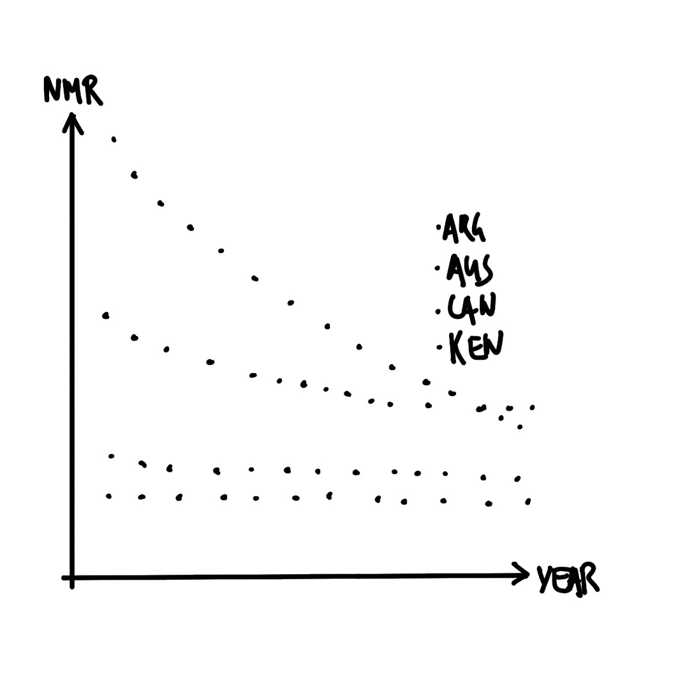
우리는 x축에 연도, y축에 추정 NMR이 있는 그래프를 만들고 싶습니다. 각 국가는 자체 시리즈를 가져야 합니다. 우리가 찾고 있는 것의 빠른 스케치는 그림 fig-nmrexample-graph입니다.
2.4.2 시뮬레이션
우리는 계획과 일치하는 데이터를 시뮬레이션하고 싶습니다. 이 경우 국가, 연도, NMR 세 가지 열이 필요합니다.
Posit Cloud 내에서 새 Quarto 문서를 만들고 저장하십시오. 서문 문서를 추가하고 작업 공간을 설정하십시오. tidyverse, janitor, lubridate를 사용할 것입니다.
#### 서문 ####
# 목적: 지난 50년간 4개국의 신생아 사망률 데이터를 얻고 준비하여 그래프를 만듭니다.
# 저자: Rohan Alexander
# 이메일: rohan.alexander@utoronto.ca
# 날짜: 2022년 7월 1일
# 선행 조건: -
#### 작업 공간 설정 ####
library(janitor)
library(lubridate)
library(tidyverse)패키지에 포함된 코드는 저자가 업데이트하고 새 버전을 출시함에 따라 때때로 변경될 수 있습니다. packageVersion()을 사용하여 사용 중인 패키지 버전을 확인할 수 있습니다. 예를 들어, tidyverse 버전 2.0.0과 janitor 버전 2.2.0을 사용하고 있습니다.
packageVersion("tidyverse")[1] '2.0.0'packageVersion("janitor")[1] '2.2.1'설치된 모든 패키지의 버전을 업데이트하려면 update.packages()를 사용합니다. tidyverse_update()를 사용하여 tidyverse 패키지만 설치할 수 있습니다. 이것은 매일 실행할 필요는 없지만, 때때로 패키지를 업데이트하는 것이 좋습니다. 많은 패키지가 하위 호환성을 보장하기 위해 노력하지만, 어느 시점부터는 불가능해집니다. 패키지를 업데이트하면 이전 코드를 다시 작성해야 할 수 있습니다. 시작할 때는 큰 문제가 아니며, 어쨌든 sec-reproducible-workflows에서 다루는 특정 버전을 로드하는 도구가 있습니다.
시뮬레이션으로 돌아가서, rep()를 사용하여 각 국가의 이름을 50번 반복하고, 50년의 기간을 전달할 수 있도록 합니다. 마지막으로, runif()를 사용하여 균일 분포에서 추출하여 해당 국가의 해당 연도에 대한 추정 NMR 값을 시뮬레이션합니다.
#### 데이터 시뮬레이션 ####
set.seed(853)
simulated_nmr_data <-
tibble(
country =
c(rep("Argentina", 50), rep("Australia", 50),
rep("Canada", 50), rep("Kenya", 50)),
year =
rep(c(1971:2020), 4),
nmr =
runif(n = 200, min = 0, max = 100)
)
head(simulated_nmr_data)# A tibble: 6 × 3
country year nmr
<chr> <int> <dbl>
1 Argentina 1971 35.9
2 Argentina 1972 12.0
3 Argentina 1973 48.4
4 Argentina 1974 31.6
5 Argentina 1975 3.74
6 Argentina 1976 40.4 이 시뮬레이션은 작동하지만, 50년 대신 60년을 시뮬레이션하는 데 관심이 있다면 시간이 많이 걸리고 오류가 발생하기 쉽습니다. 이 코드를 개선하는 한 가지 방법은 50의 모든 인스턴스를 변수로 대체하는 것입니다.
#### 데이터 시뮬레이션 ####
set.seed(853)
number_of_years <- 50
simulated_nmr_data <-
tibble(
country =
c(rep("Argentina", number_of_years), rep("Australia", number_of_years),
rep("Canada", number_of_years), rep("Kenya", number_of_years)),
year =
rep(c(1:number_of_years + 1970), 4),
nmr =
runif(n = number_of_years * 4, min = 0, max = 100)
)
head(simulated_nmr_data)# A tibble: 6 × 3
country year nmr
<chr> <dbl> <dbl>
1 Argentina 1971 35.9
2 Argentina 1972 12.0
3 Argentina 1973 48.4
4 Argentina 1974 31.6
5 Argentina 1975 3.74
6 Argentina 1976 40.4 결과는 동일하지만, 이제 50년에서 60년으로 변경하려면 한 곳에서만 변경하면 됩니다.
이 시뮬레이션된 데이터셋은 비교적 간단하고 우리가 코드를 작성했기 때문에 신뢰할 수 있습니다. 그러나 실제 데이터셋으로 전환할 때, 그것이 주장하는 바와 일치하는지 확인하기가 더 어렵습니다. 데이터를 신뢰하더라도, 그 신뢰를 다른 사람들과 공유할 수 있어야 합니다. 한 가지 방법은 데이터가 제대로 되어 있는지 테스트를 설정하는 것입니다. 예를 들어, 우리는 다음을 예상합니다:
- “country”는 이 네 가지 중 하나여야 합니다: “Argentina”, “Australia”, “Canada”, “Kenya”.
- 반대로, “country”는 이 네 가지 국가를 모두 포함해야 합니다.
- “year”는 1971보다 작거나 2020보다 크지 않아야 하며, 정수여야 합니다. 문자나 소수점이 있는 숫자가 아니어야 합니다.
- “nmr”은 0에서 1,000 사이의 값이어야 하며, 숫자여야 합니다.
이러한 기능을 기반으로 데이터셋이 통과할 것으로 예상되는 일련의 테스트를 작성할 수 있습니다.
simulated_nmr_data$country |>
unique() == c("Argentina", "Australia", "Canada", "Kenya")
simulated_nmr_data$country |>
unique() |>
length() == 4
simulated_nmr_data$year |> min() == 1971
simulated_nmr_data$year |> max() == 2020
simulated_nmr_data$nmr |> min() >= 0
simulated_nmr_data$nmr |> max() <= 1000
simulated_nmr_data$nmr |> class() == "numeric"이러한 테스트를 통과했으므로 시뮬레이션된 데이터셋을 신뢰할 수 있습니다. 더 중요한 것은 이러한 테스트를 실제 데이터셋에 적용할 수 있다는 것입니다. 이를 통해 해당 데이터셋에 대한 신뢰를 높이고 그 신뢰를 다른 사람들과 공유할 수 있습니다.
2.4.3 획득
유엔 아동 사망률 추정 기관 간 그룹(IGME)은 다운로드하여 저장할 수 있는 NMR 추정치를 제공합니다.
#### 데이터 획득 ####
raw_igme_data <-
read_csv(
file =
"https://childmortality.org/wp-content/uploads/2021/09/UNIGME-2021.csv",
show_col_types = FALSE
)
write_csv(x = raw_igme_data, file = "igme.csv")이와 같이 확립된 데이터의 경우, 데이터에 대한 지원 자료를 읽는 것이 유용할 수 있습니다. 이 경우 코드북은 여기에서 사용할 수 있습니다. 이 후에는 데이터셋을 더 잘 이해하기 위해 빠르게 살펴볼 수 있습니다. head()로 데이터셋이 어떻게 생겼는지, tail()로 마지막 여섯 행을, names()로 열 이름을 확인할 수 있습니다.
head(raw_igme_data)# A tibble: 6 × 29
`Geographic area` Indicator Sex `Wealth Quintile` `Series Name`
<chr> <chr> <chr> <chr> <chr>
1 Afghanistan Neonatal mortality ra… Total Total Multiple Ind…
2 Afghanistan Neonatal mortality ra… Total Total Multiple Ind…
3 Afghanistan Neonatal mortality ra… Total Total Multiple Ind…
4 Afghanistan Neonatal mortality ra… Total Total Multiple Ind…
5 Afghanistan Neonatal mortality ra… Total Total Multiple Ind…
6 Afghanistan Neonatal mortality ra… Total Total Afghanistan …
# ℹ 24 more variables: `Series Year` <chr>, `Regional group` <chr>,
# TIME_PERIOD <chr>, OBS_VALUE <dbl>, COUNTRY_NOTES <chr>, CONNECTION <lgl>,
# DEATH_CATEGORY <lgl>, CATEGORY <chr>, `Observation Status` <chr>,
# `Unit of measure` <chr>, `Series Category` <chr>, `Series Type` <chr>,
# STD_ERR <dbl>, REF_DATE <dbl>, `Age Group of Women` <chr>,
# `Time Since First Birth` <chr>, DEFINITION <chr>, INTERVAL <dbl>,
# `Series Method` <chr>, LOWER_BOUND <dbl>, UPPER_BOUND <dbl>, …names(raw_igme_data) [1] "Geographic area" "Indicator" "Sex"
[4] "Wealth Quintile" "Series Name" "Series Year"
[7] "Regional group" "TIME_PERIOD" "OBS_VALUE"
[10] "COUNTRY_NOTES" "CONNECTION" "DEATH_CATEGORY"
[13] "CATEGORY" "Observation Status" "Unit of measure"
[16] "Series Category" "Series Type" "STD_ERR"
[19] "REF_DATE" "Age Group of Women" "Time Since First Birth"
[22] "DEFINITION" "INTERVAL" "Series Method"
[25] "LOWER_BOUND" "UPPER_BOUND" "STATUS"
[28] "YEAR_TO_ACHIEVE" "Model Used" 이름을 정리하고 관심 있는 행과 열만 유지하고 싶습니다. 계획에 따라 “Sex”가 “Total”, “Series Name”이 “UN IGME estimate”, “Geographic area”가 “Argentina”, “Australia”, “Canada”, “Kenya” 중 하나, “Indicator”가 “Neonatal mortality rate”인 행에 관심이 있습니다. 이 후에는 “geographic_area”, “time_period”, “obs_value” 몇 개의 열에만 관심이 있습니다.
cleaned_igme_data <-
clean_names(raw_igme_data) |>
filter(
sex == "Total",
series_name == "UN IGME estimate",
geographic_area %in% c("Argentina", "Australia", "Canada", "Kenya"),
indicator == "Neonatal mortality rate"
) |>
select(geographic_area, time_period, obs_value)
head(cleaned_igme_data)# A tibble: 6 × 3
geographic_area time_period obs_value
<chr> <chr> <dbl>
1 Argentina 1970-06 24.9
2 Argentina 1971-06 24.7
3 Argentina 1972-06 24.6
4 Argentina 1973-06 24.6
5 Argentina 1974-06 24.5
6 Argentina 1975-06 24.1두 가지 다른 측면을 수정해야 합니다: “time_period”의 클래스는 문자이지만 연도여야 하고, “obs_value”의 이름은 더 유익하도록 “nmr”로 변경해야 합니다.
cleaned_igme_data <-
cleaned_igme_data |>
mutate(
time_period = str_remove(time_period, "-06"),
time_period = as.integer(time_period)
) |>
filter(time_period >= 1971) |>
rename(nmr = obs_value, year = time_period, country = geographic_area)
head(cleaned_igme_data)# A tibble: 6 × 3
country year nmr
<chr> <int> <dbl>
1 Argentina 1971 24.7
2 Argentina 1972 24.6
3 Argentina 1973 24.6
4 Argentina 1974 24.5
5 Argentina 1975 24.1
6 Argentina 1976 23.3마지막으로, 시뮬레이션된 데이터셋을 기반으로 개발한 테스트를 데이터셋이 통과하는지 확인할 수 있습니다.
cleaned_igme_data$country |>
unique() == c("Argentina", "Australia", "Canada", "Kenya")[1] TRUE TRUE TRUE TRUEcleaned_igme_data$country |>
unique() |>
length() == 4[1] TRUEcleaned_igme_data$year |> min() == 1971[1] TRUEcleaned_igme_data$year |> max() == 2020[1] TRUEcleaned_igme_data$nmr |> min() >= 0[1] TRUEcleaned_igme_data$nmr |> max() <= 1000[1] TRUEcleaned_igme_data$nmr |> class() == "numeric"[1] TRUE남은 것은 깔끔하게 정리된 데이터셋을 저장하는 것입니다.
write_csv(x = cleaned_igme_data, file = "cleaned_igme_data.csv")2.4.4 탐색
정리된 데이터셋을 사용하여 추정 NMR 그래프를 만들고 싶습니다. 먼저, 데이터셋을 읽어들입니다.
#### 탐색 ####
cleaned_igme_data <-
read_csv(
file = "cleaned_igme_data.csv",
show_col_types = FALSE
)이제 NMR이 시간 경과에 따라 어떻게 변했는지, 그리고 국가 간의 차이를 그래프로 만들 수 있습니다 (그림 fig-nmrgraph).
cleaned_igme_data |>
ggplot(aes(x = year, y = nmr, color = country)) +
geom_point() +
theme_minimal() +
labs(x = "연도", y = "신생아 사망률(NMR)", color = "국가") +
scale_color_brewer(palette = "Set1") +
theme(legend.position = "bottom")
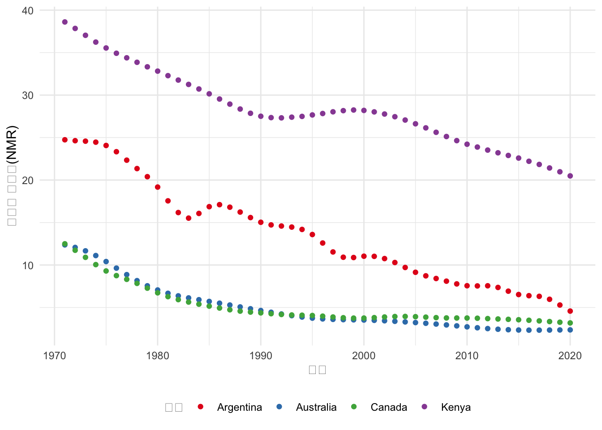
2.4.5 공유
이 시점까지 우리는 데이터를 다운로드하고, 정리하고, 테스트를 작성하고, 그래프를 만들었습니다. 일반적으로 우리가 한 일을 어느 정도 자세히 전달해야 합니다. 이 경우, 우리가 한 일, 왜 했는지, 그리고 무엇을 발견했는지에 대해 몇 단락을 작성할 것입니다.
신생아 사망률은 생후 첫 달 이내에 발생하는 사망을 의미합니다. 특히, 신생아 사망률(NMR)은 1,000명당 신생아 사망자 수입니다. 우리는 지난 50년간 아르헨티나, 호주, 캐나다, 케냐 네 개국의 NMR 추정치를 얻습니다.
유엔 아동 사망률 추정 기관 간 그룹(IGME)은 웹사이트 https://childmortality.org/에서 NMR 추정치를 제공합니다. 우리는 그들의 추정치를 다운로드한 다음 통계 프로그래밍 언어 R (R Core Team 2024)을 사용하여 데이터셋을 정리하고 정돈했습니다.
우리는 시간 경과에 따른 추정 NMR과 관심 있는 네 개국 간의 상당한 변화를 발견했습니다 (그림 fig-nmrgraph). 1970년대에는 추정 NMR이 감소하는 경향이 있었습니다. 호주와 캐나다는 그 시점에서 낮은 NMR을 보였고 2020년까지 그 수준을 유지했으며, 약간 더 감소했습니다. 아르헨티나와 케냐의 추정치는 2020년까지 계속해서 상당한 감소를 보였습니다.
우리의 결과는 시간 경과에 따른 추정 NMR의 상당한 개선을 시사합니다. NMR 추정치는 추정치를 뒷받침하는 통계 모델과 기본 데이터에 기반합니다. 데이터의 이중 부담은 종종 결과가 좋지 않은 그룹, 이 경우 국가에 대해 고품질 데이터를 쉽게 사용할 수 없다는 것입니다. 우리의 결론은 추정치를 뒷받침하는 모델과 기본 데이터의 품질에 따라 달라지며, 우리는 이들 중 어느 것도 독립적으로 검증하지 않았습니다.
2.5 결론
이 장에서 많은 내용을 다루었으며, 모든 것을 이해하지 못하는 것은 정상입니다. 가장 좋은 방법은 세 가지 사례 연구를 각자 시간을 내어 살펴보는 것입니다. 복사-붙여넣기 대신 모든 코드를 직접 입력하고, 완전히 이해하지 못하더라도 조금씩 실행하십시오. 그런 다음 자신만의 주석을 추가해 보십시오.
또한 이 시점에서 이 장의 모든 것을 완전히 이해할 필요는 없습니다. 일부 학생들은 이 책의 다음 몇 장을 계속해서 읽고 나중에 이 장으로 돌아오는 것이 가장 좋다고 생각합니다. 흥미롭게도 우리는 한두 시간의 작업만으로 데이터를 사용하여 세상에 대해 무언가를 배울 수 있음을 보여주었습니다. 이러한 기술을 개발하면서, 우리는 또한 우리 작업의 더 넓은 영향에 대해 점점 더 정교하게 고려해야 합니다.
“우리는 우리 작업의 사회적 영향에 대해 생각할 필요가 없습니다. 왜냐하면 그것은 어렵고 다른 사람들이 우리를 위해 할 수 있기 때문입니다.”는 정말 나쁜 주장입니다. 저는 CV [컴퓨터 비전] 연구를 중단했습니다. 왜냐하면 제 작업이 미치는 영향을 보았기 때문입니다. 저는 그 작업을 좋아했지만, 군사적 응용과 개인 정보 보호 문제는 결국 무시할 수 없게 되었습니다. 그러나 기본적으로 모든 얼굴 인식 작업은 우리가 더 넓은 영향 섹션을 진지하게 받아들인다면 출판되지 않을 것입니다. 거의 이점이 없고 엄청난 단점 위험이 있습니다. 공정하게 말하자면, 저는 여기서 많은 겸손을 가져야 합니다. 대학원 대부분 동안 저는 과학이 비정치적이고 연구는 주제가 무엇이든 객관적으로 도덕적이고 좋다는 신화를 믿었습니다.
Joe Redmon, 2020년 2월 20일
“데이터 과학”이라는 용어는 학계, 산업계, 심지어 더 일반적으로도 널리 사용되지만, 우리가 보았듯이 정의하기 어렵습니다. 데이터 과학에 대한 의도적으로 적대적인 정의는 “인간성을 셀 수 있는 것으로 비인간적으로 축소하는 것”입니다 (Keyes 2019). 의도적으로 논란의 여지가 있지만, 이 정의는 지난 10년 동안 데이터 과학 및 양적 방법론에 대한 수요가 증가한 한 가지 이유를 강조합니다. 즉, 개인과 그들의 행동이 이제 그 중심에 있다는 것입니다. 많은 기술은 수십 년 동안 존재했지만, 지금 인기를 끄는 것은 이러한 인간 중심적인 접근 방식입니다.
불행히도, 많은 작업이 개인에게 초점을 맞추고 있음에도 불구하고, 개인 정보 보호 및 동의 문제, 그리고 더 넓은 윤리적 문제는 거의 최우선으로 고려되지 않는 것 같습니다. 일부 예외는 있지만, 일반적으로 AI, 머신러닝, 데이터 과학이 사회를 혁신할 것이라고 주장하면서도, 이러한 유형의 문제는 혁명을 받아들이기 전에 생각해야 할 것이 아니라, 있으면 좋은 것으로 취급되는 경향이 있습니다.
대부분의 경우, 이러한 유형의 문제는 새로운 것이 아닙니다. 과학 분야에서는 CRISPR 기술과 유전자 편집에 대한 광범위한 윤리적 고려가 있었습니다 (Brokowski 와/과 Adli 2019; Marchese 2022). 그리고 이전 시대에는 유사한 대화가 있었습니다. 예를 들어, 베르너 폰 브라운이 나치 독일을 위해 로켓을 만들었음에도 불구하고 미국을 위해 로켓을 만들도록 허용된 것에 대한 논의가 있었습니다 (Neufeld 2002; Wilford 1977). 의학 분야에서는 이러한 우려가 오랫동안 최우선으로 고려되었습니다 (American Medical Association and New York Academy of Medicine 1848). 데이터 과학은 다른 분야의 경험을 바탕으로 이러한 문제를 생각하고 사전에 해결하기보다는 자체적인 터스키기 순간을 맞이할 운명인 것 같습니다.
그렇긴 하지만, 일부 데이터 과학자들이 실습을 둘러싼 윤리에 대해 더 많은 관심을 갖기 시작했다는 증거가 있습니다. 예를 들어, 권위 있는 머신러닝 컨퍼런스인 NeurIPS는 2020년부터 모든 제출물에 윤리적 측면에 대한 진술을 요구하고 있습니다.
균형 잡힌 관점을 제공하기 위해 저자는 윤리적 측면 및 미래 사회적 결과를 포함하여 작업의 잠재적인 더 넓은 영향에 대한 진술을 포함해야 합니다. 저자는 긍정적인 결과와 부정적인 결과를 모두 논의하도록 주의해야 합니다.
NeurIPS 2020 컨퍼런스 논문 모집
데이터 과학의 윤리적 고려와 더 넓은 영향에 대한 우려의 목적은 어떤 것을 규범적으로 허용하거나 금지하는 것이 아니라, 가장 중요하게 다루어져야 할 몇 가지 문제를 제기할 기회를 제공하는 것입니다. 데이터 과학 응용의 다양성, 분야의 상대적인 젊음, 그리고 변화의 속도는 그러한 고려 사항이 때때로 의도적으로 제쳐두어지며, 이는 해당 분야의 나머지 부분에서 허용된다는 것을 의미합니다. 이는 과학, 의학, 공학, 회계와 같은 분야와 대조됩니다. 아마도 이러한 분야는 더 자각적일 것입니다 (그림 fig-personalprobability).

2.6 연습 문제
퀴즈
- 데이터 과학이란 무엇입니까 (자신의 말로)?
- (register2020에?) 따르면, 데이터 결정은 (하나를 선택하십시오)?
- 실제 사람들에게 영향을 미칩니다.
- 아무에게도 영향을 미치지 않습니다.
- 훈련 세트에 있는 사람들에게 영향을 미칩니다.
- 테스트 세트에 있는 사람들에게 영향을 미칩니다.
- (keyes2019에?) 따르면, 데이터 과학이란 무엇입니까 (하나를 선택하십시오)?
- 데이터 과학은 과학적 방법, 프로세스, 알고리즘 및 시스템을 사용하여 많은 구조화된 및 비구조화된 데이터에서 지식과 통찰력을 추출하는 학제 간 분야입니다.
- 의사 결정을 위한 대량의 데이터에 대한 양적 분석.
- 인간성을 셀 수 있는 것으로 비인간적으로 축소하는 것.
- (keyes2019에?) 따르면, 표준화된 범주를 요구하는 데이터 시스템의 한 가지 결과는 무엇입니까 (하나를 선택하십시오)?
- 사용자 경험 저하.
- 보안 조치 손상.
- 기술 혁신 증가.
- 개인의 정체성과 경험의 말소.
- (kieranskitchen에?) 따르면, 데이터를 다루는 것에 대한 일반적인 비판은 무엇입니까 (하나를 선택하십시오)?
- 너무 시간이 많이 걸리고 비효율적이라는 것.
- 숫자 뒤에 있는 인간 삶의 현실과 거리를 두게 한다는 것.
- 분석을 위해 값비싼 소프트웨어와 광범위한 훈련이 필요하다는 것.
- (kieranskitchen에?) 따르면, 그 비판에 대한 한 가지 답변은 무엇입니까 (하나를 선택하십시오)?
- 데이터를 다루는 것은 의미에 대한 질문과 대면하게 합니다.
- 데이터 분석은 수행되어서는 안 됩니다.
- 데이터는 자동화된 프로세스에 의해서만 분석되어야 합니다.
- 질적 접근 방식이 지배적인 접근 방식이어야 합니다.
- (keyes2019와?) (kieranskitchen을?) 어떻게 조화시킬 수 있습니까?
- 윤리가 데이터 과학의 핵심 요소인 이유는 무엇입니까 (하나를 선택하십시오)?
- 데이터 과학은 항상 민감한 개인 정보를 포함하기 때문입니다.
- 윤리적 고려 사항이 분석을 더 쉽게 만들기 때문입니다.
- 데이터셋은 인간과 관련될 가능성이 높으며 맥락을 고려해야 하기 때문입니다.
- 규제가 모든 데이터 분석에 윤리 승인을 요구하기 때문입니다.
- 이 장에서 설명된 (crawford에?) 따르면, 다음 중 우리 세상과 따라서 우리의 데이터를 형성하는 힘은 무엇입니까 (모두 선택하십시오)?
- 정치적.
- 물리적.
- 역사적.
- 문화적.
- 사회적.
- (nottomford에?) 따르면, 컴파일러란 무엇입니까 (하나를 선택하십시오)?
- 파일에 입력한 기호를 하위 수준 명령으로 변환하는 소프트웨어.
- 누군가가 입력하거나 복사하거나 다른 곳에서 붙여넣은 일련의 기호 (일반적인 키보드 문자를 사용하여 어떤 종류의 파일로 저장됨).
- 이점이 있는 시계.
- 펀치 카드에 구멍을 뚫고, 상자에 넣고, 로드한 다음, 컴퓨터가 카드를 넘겨 구멍이 있는 곳을 식별하고 메모리 일부를 업데이트하는 것.
- 성별에 대한 설문조사 결과가 다음과 같다고 가정해 봅시다: “남성: 879”, “여성: 912”, “논바이너리: 10”, “말하고 싶지 않음: 3”, “기타: 1”. “말하고 싶지 않음”을 고려하는 적절한 방법은 무엇입니까 (하나를 선택하십시오)?
- 삭제합니다.
- 상황에 따라 다릅니다.
- 포함합니다.
- “기타”로 병합합니다.
- 인종 및/또는 성별을 예측 변수로 포함하면 모델의 성능이 향상되는 직업을 가지고 있다고 가정해 봅시다. 분석에 이러한 변수를 포함할지 여부를 결정할 때 어떤 요소를 고려할 것입니까 (자신의 말로)?
- 데이터 과학에서 재현성이란 무엇을 의미합니까 (하나를 선택하십시오)?
- 다른 데이터셋으로 유사한 결과를 생성할 수 있는 것.
- 분석의 모든 단계를 다른 사람이 독립적으로 다시 수행할 수 있도록 보장하는 것.
- 동료 심사 저널에 결과를 게시하는 것.
- 데이터를 보호하기 위해 독점 소프트웨어를 사용하는 것.
- 측정과 관련된 과제는 무엇입니까 (하나를 선택하십시오)?
- 일반적으로 간단하고 거의 주의를 기울일 필요가 없습니다.
- 무엇을 어떻게 측정할지 결정하는 것은 복잡하고 맥락에 따라 다릅니다.
- 데이터 수집은 객관적이고 편향이 없습니다.
- 측정은 항상 정확하고 시간이 지나도 일관적입니다.
- 조각가 비유에서 조각하는 행위는 데이터 워크플로우에서 무엇을 나타냅니까 (하나를 선택하십시오)?
- 데이터에 맞는 복잡한 모델을 생성하는 것.
- 원시 데이터를 획득하는 것.
- 필요한 데이터셋을 드러내기 위해 데이터를 정리하고 준비하는 것.
- 결과를 시각화하는 것.
- 탐색적 데이터 분석(EDA)이 개방형 프로세스인 이유는 무엇입니까 (하나를 선택하십시오)?
- 따라야 할 고정된 단계가 있기 때문입니다.
- 데이터의 형태와 패턴을 이해하기 위해 지속적인 반복이 필요하기 때문입니다.
- 구조화된 방식으로 가설을 테스트하는 것을 포함하기 때문입니다.
- 자동화할 수 있기 때문입니다.
- 통계 모델을 신중하게 사용해야 하는 이유는 무엇입니까 (하나를 선택하십시오)?
- 항상 결정적인 결과를 제공하기 때문입니다.
- 초기 단계에서 내려진 결정을 반영할 수 있기 때문입니다.
- 대부분의 청중에게 너무 복잡하기 때문입니다.
- 데이터가 잘 제시되면 불필요하기 때문입니다.
- 키 측정의 어려움에 대해 생각하는 것에서 얻을 수 있는 한 가지 교훈은 무엇입니까 (하나를 선택하십시오)?
- 키는 변동성이 거의 없는 간단한 측정입니다.
- 모든 측정은 올바른 도구로 수행되면 정확합니다.
- 간단한 측정조차도 데이터 품질에 영향을 미치는 복잡성을 가질 수 있습니다.
- 키는 데이터 분석에서 유용한 변수가 아닙니다.
- 데이터셋에서 누락된 사람을 고려하지 않는 것의 위험은 무엇입니까 (하나를 선택하십시오)?
- 분석에 큰 영향을 미치지 않습니다.
- 데이터 양을 줄여 분석을 단순화합니다.
- 전체 맥락을 나타내지 않는 결론으로 이어질 수 있습니다.
- 통계 모델링의 목적은 무엇입니까 (하나를 선택하십시오)?
- 데이터를 탐색하고 이해하는 데 도움이 되는 도구.
- 가설을 증명하는 것.
- 탐색적 데이터 분석을 대체하는 것.
- “우리 데이터는 지저분하고 복잡한 세상의 단순화이다”라는 말은 무엇을 의미합니까 (하나를 선택하십시오)?
- 데이터는 현실의 모든 측면을 완벽하게 포착합니다.
- 데이터는 분석을 가능하게 하기 위해 현실을 단순화하지만, 모든 세부 사항을 포착할 수는 없습니다.
- 데이터는 항상 부정확하고 쓸모없습니다.
수업 활동
- 강사는 수업 사진을 찍은 다음 화면에 사진을 표시해야 합니다. 소그룹으로 학생들은 사진이 보여주는 세 가지 측면과 보여주지 않는 세 가지 측면을 식별해야 합니다. 이것이 데이터 과학과 어떻게 관련되는지 논의하십시오.
- 강사는 각 그룹에 측정에 사용할 다른 항목을 제공해야 합니다. 일부는 다른 것보다 더 유용합니다. 예를 들어, 줄자, 종이, 자, 마커, 저울 등. 그런 다음 학생들은 해당 항목을 사용하여 다음 질문에 답해야 합니다: “머리카락 길이는 얼마입니까?”. 숫자를 스프레드시트에 추가하십시오. 스프레드시트만 있다면 머리카락 길이에 대해 무엇을 이해하고 무엇을 이해하지 못할 것입니까? 이를 더 넓은 데이터 과학과 연결하십시오.
과제
이 과제의 목적은 겉보기에 간단해 보이는 것조차 측정의 어려움을 명확히 하고, 따라서 더 복잡한 영역에서 측정 문제의 가능성을 명확히 하는 것입니다.
무, 겨자잎, 루꼴라와 같이 빠르게 자라는 식물의 씨앗을 구하십시오. 씨앗을 심고 사용한 흙의 양을 측정하십시오. 물을 주고 사용한 물의 양을 측정하십시오. 매일 변화를 기록하십시오. 더 일반적으로, 가능한 한 많이 측정하고 기록하십시오. 측정의 어려움에 대한 생각을 기록하십시오. 결국 씨앗이 싹을 틔울 것이고, 어떻게 자라는지 측정해야 합니다.
- 계획:
- 데이터셋: 각 관측치는 선거구 이름과 당선된 후보의 정당을 포함해야 합니다.
- 그래프: 각 정당이 얻은 선거구 수를 보여주는 그래프를 만들어야 합니다.
- 시뮬레이션:
- Quarto 문서를 생성합니다.
- 필요한 패키지(
tidyverse,janitor)를 로드합니다. - 선거구에 정당을 무작위로 할당하여 선거 결과를 시뮬레이션합니다: 선거구 번호를 추가한 다음, 6가지 옵션 중 하나를 복원 추출 방식으로 338번 무작위로 선택하기 위해
sample()함수를 사용합니다.
- 획득:
- 캐나다 선거관리위원회에서 CSV 파일을 여기에서 다운로드합니다.
- 이름을 정리한 다음, 관심 있는 두 열(“electoral_district_name_nom_de_circonscription” 및 “elected_candidate_candidat_elu”)을 선택합니다. 마지막으로, 프랑스어 부분을 제거하고 이름을 단순화하여 열 이름을 변경합니다.
- 필요한 열은 당선된 후보에 대한 것입니다. 이 열에는 당선된 후보의 성, 쉼표, 이름, 공백, 그리고 슬래시로 구분된 영어와 프랑스어 정당 이름이 포함되어 있습니다.
tidyr의separate()를 사용하여 이 열을 조각으로 분리한 다음,select()를 사용하여 정당 정보만 유지합니다 (아래에 일부 도우미 코드가 있습니다). - 마지막으로, 시뮬레이션한 내용과 일치하도록 정당 이름을 프랑스어에서 영어로 다시 코딩합니다.
::: {.cell}
cleaned_elections_data <-
cleaned_elections_data |>
separate(
col = elected_candidate,
into = c("Other", "party"),
sep = "/"
) |>
select(-Other):::
- 탐색:
- 2021년 캐나다 연방 선거에서 각 정당이 얻은 선거구 수를 멋진 그래프로 만듭니다.
- 공유:
- 무엇을 했고, 왜 했으며, 무엇을 발견했는지에 대해 몇 단락으로 작성합니다. GitHub Gist 링크를 제출합니다.
American Medical Association and New York Academy of Medicine. 1848. Code of medical ethics. Academy of Medicine. https://hdl.handle.net/2027/chi.57108026.
Arel-Bundock, Vincent. 2024. tinytable: Simple and Configurable Tables in “HTML”, “LaTeX”, “Markdown”, “Word”, “PNG”, “PDF”, and “Typst” Formats. https://vincentarelbundock.github.io/tinytable/.
Barrett, Malcolm. 2021. Data science as an atomic habit. https://malco.io/articles/2021-01-04-data-science-as-an-atomic-habit.
Brokowski, Carolyn, 와/과 Mazhar Adli. 2019. “CRISPR Ethics: Moral Considerations for Applications of a Powerful Tool”. Journal of Molecular Biology 431 (1): 88–101. https://doi.org/10.1016/j.jmb.2018.05.044.
Chambliss, Daniel. 1989. “The Mundanity of Excellence: An Ethnographic Report on Stratification and Olympic Swimmers”. Sociological Theory 7 (1): 70–86. https://doi.org/10.2307/202063.
City of Toronto. 2021. 2021 Street Needs Assessment. https://www.toronto.ca/city-government/data-research-maps/research-reports/housing-and-homelessness-research-and-reports/.
Firke, Sam. 2023. janitor: Simple Tools for Examining and Cleaning Dirty Data. https://CRAN.R-project.org/package=janitor.
Gelfand, Sharla. 2022. opendatatoronto: Access the City of Toronto Open Data Portal. https://CRAN.R-project.org/package=opendatatoronto.
Grolemund, Garrett, 와/과 Hadley Wickham. 2011. “Dates and Times Made Easy with lubridate”. Journal of Statistical Software 40 (3): 1–25. https://doi.org/10.18637/jss.v040.i03.
Hao, Karen. 2019. “This is How AI Bias Really Happens—And Why It’s So Hard To Fix”. MIT Technology Review, 2월. https://www.technologyreview.com/2019/02/04/137602/this-is-how-ai-bias-really-happensand-why-its-so-hard-to-fix/.
Keyes, Os. 2019. “Counting the Countless”. Real Life. https://reallifemag.com/counting-the-countless/.
Marchese, David. 2022. “Her Discovery Changed the World. How Does She Think We Should Use It?” The New York Times, 8월. https://www.nytimes.com/interactive/2022/08/15/magazine/jennifer-doudna-crispr-interview.html.
Neufeld, Michael. 2002. “Wernher von Braun, the SS, and concentration camp labor: Questions of moral, political, and criminal responsibility”. German Studies Review 25 (1): 57–78. https://doi.org/10.2307/1433245.
R Core Team. 2024. R: A Language and Environment for Statistical Computing. Vienna, Austria: R Foundation for Statistical Computing. https://www.R-project.org/.
UN IGME. 2021. “Levels and Trends in Child Mortality, 2021”. https://childmortality.org/wp-content/uploads/2021/12/UNICEF-2021-Child-Mortality-Report.pdf.
Wickham, Hadley. 2016. ggplot2: Elegant Graphics for Data Analysis. Springer-Verlag New York. https://ggplot2.tidyverse.org.
———. 2017. tidyverse: Easily Install and Load the “Tidyverse”. https://CRAN.R-project.org/package=tidyverse.
———. 2019. Advanced R. 2nd ed. Chapman; Hall/CRC. https://adv-r.hadley.nz.
———. 2022. stringr: Simple, Consistent Wrappers for Common String Operations. https://CRAN.R-project.org/package=stringr.
Wickham, Hadley, Mara Averick, Jenny Bryan, Winston Chang, Lucy D’Agostino McGowan, Romain François, Garrett Grolemund, 기타. 2019. “Welcome to the Tidyverse”. Journal of Open Source Software 4 (43): 1686. https://doi.org/10.21105/joss.01686.
Wickham, Hadley, Mine Çetinkaya-Rundel, 와/과 Garrett Grolemund. (2016년) 2023. R for Data Science. 2nd ed. O’Reilly Media. https://r4ds.hadley.nz.
Wickham, Hadley, Romain François, Lionel Henry, 와/과 Kirill Müller. 2022. dplyr: A Grammar of Data Manipulation. https://CRAN.R-project.org/package=dplyr.
Wickham, Hadley, Jim Hester, 와/과 Jenny Bryan. 2022. readr: Read Rectangular Text Data. https://CRAN.R-project.org/package=readr.
Wickham, Hadley, Davis Vaughan, 와/과 Maximilian Girlich. 2023. tidyr: Tidy Messy Data. https://CRAN.R-project.org/package=tidyr.
Wilford, John Noble. 1977. “Wernher von Braun, Rocket Pioneer, Dies”. The New York Times, 6월. https://www.nytimes.com/1977/06/18/archives/wernher-von-braun-rocket-pioneer-dies-wernher-von-braun-pioneer-in.html.
Xie, Yihui. 2023. knitr: A General-Purpose Package for Dynamic Report Generation in R. https://yihui.org/knitr/.